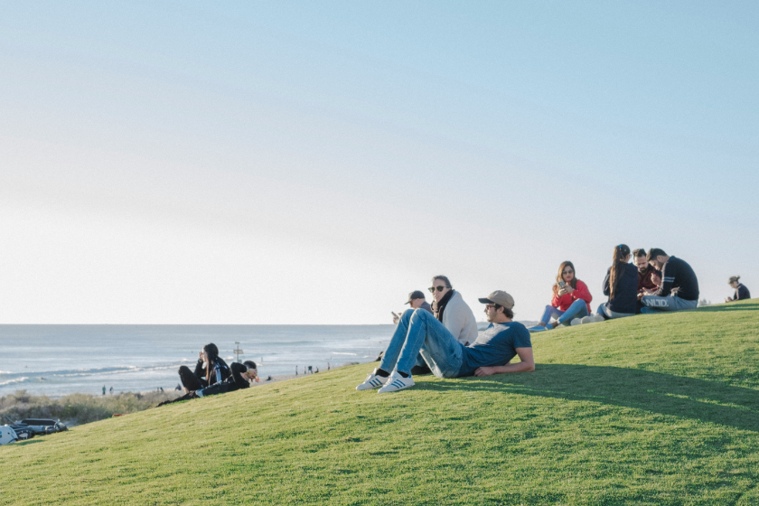

かつて探検家たちが魅了され、今も世界中の旅人を惹きつけてやまない西オーストラリアの美しい都。
パース市内から少し足を伸ばした海岸線まで、各地に点在する五感を満たすスポットを中心に、あなただけの特別な楽しみ方をご紹介します。
MAP ～観光スポットマップ～
パースを楽しむ
ツアーのご案内
「PERTH」に掲載したパースを巡るツアーを企画しています。
これまでに10回を超すツアーが開催され、延べ1000人あまりが参加。パースの街を楽しみました。

参加者の声
-
自然と調和した美しい景色がとても印象的でした。パースならではの自然の魅力を存分に感じることができ、ゆったりとした時間を過ごせました。とても充実したツアーで、参加してよかったです。
-
初めて訪れる場所でも、ガイドさんの説明を聞きながら巡ることで、より楽しく観光することができました。自分たちだけでは気づかなかったポイントも知ることができて、パースをより身近に感じられる素敵なツアーでした。
各地の日本庭園を舞台にしたツアーを次々と開催中です。
詳細は中日ツアーズの公式ホームページをご覧ください。